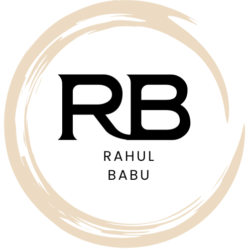

Machine Learning & Data Analyst Enthusiast also an AI Developer
Aiming to solve real-world problems by working on impactful projects to gain hands-on experience and deepen practical knowledge.
Passionate about building real-world solutions with data, design, and code.
Aspiring Data Analyst and Machine Learning Developer with a strong academic background in Artificial Intelligence and Data Science. Skilled in Python, R, and Java, with hands-on experience building impactful projects like a HR Attrition Analysis prediction model, an Android virtual assistant, and an IoT-based smart helmet. Passionate about leveraging data-driven solutions to solve real-world problems. Adept in tools like MySQL, Tableau, and Streamlit, with additional exposure to Android development and cloud technologies. Currently building an advanced lung cancer prediction web app integrating machine learning, medical diagnostics, and user-friendly UI. “Motivated to learn, build, and contribute in dynamic tech environments.”
Proficient in Python for data analysis, machine learning, and automation. Used extensively in projects like Lung Cancer Prediction and HR Attrition analysis.
Essential Python library for numerical computing with powerful array operations and mathematical functions.
Essential Python library for numerical computing with powerful array operations and mathematical functions.
Used Java in Android development and basic backend structures. Comfortable with OOP, data structures, and algorithms.
Utilized for statistical modeling and visualization. Familiar with tidyverse, ggplot2, and RStudio for academic and research use.
Used MySQL for querying large datasets, joining tables, and managing databases in data-driven projects.
Created interactive dashboards and data visualizations. Used in HR Attrition project to provide insights to stakeholders.
Explored Tableau for clean, interactive dashboards. Familiar with storytelling via visual data representation.
Used for building and training ML models like Random Forest, Logistic Regression, and KNN. Applied in multiple prediction projects.
Developed data apps with clean UI using Streamlit. Created medical tools like Lung Cancer Prediction App.
Comfortable with version control, pushing commits, managing branches, and collaborating on projects through GitHub.
Built Android apps including an AI virtual assistant (Dicio). Used Android Studio, basic HTML, and Python backend logic.
An advanced machine learning project that predicts lung cancer risk levels (Low, Medium, High) based on user-input symptoms. Built with a user-friendly Streamlit interface, the app features Google-based doctor consultation and a high-contrast medical theme.
Tech: Python, Scikit-learn, Random Forest, StandardScaler, Streamlit, Joblib, Pandas, NumPy
Python Pandas Random_Forest StandardScaler Streamlit joblib
Click hereEngineered a scalable AI assistant backend utilizing a FAST API Gateway for Performing tasks easier and making user needs simpler in day-to-day life. Integrating several light weight LLMs (like GPTs, Code LLAMA, DeepseekCoder, Pegasus, phi3mini) make this project to work better and modular with good accuracy results ,Aim is to make this model available in both online and offline.
Tech: Python, Scikit-learn, FASTAPI's,DataBases,API KEY's,Mini LLM Models,GPT's,DeepSeekCoder,
Python FASTAPI's DataBases GPT's DeepSeekCoder API
Click hereI conducted an end-to-end HR Attrition Analysis by combining machine learning in Python with interactive dashboards in Power BI. I used tools like Pandas, Scikit-learn, and SHAP to predict employee attrition and explain the key drivers behind those predictions. The outcome was a dynamic, insight-rich Power BI dashboard that empowered HR teams to visualize attrition risk across departments and roles.
TECH Python Pandas Scikit-learn Matplotlib Seaborn SHAP Jupyter Notebook PowerBI
Click HereDicio_An AI Virtual Assistant
Dicio is a free, open-source voice assistant for Android. It works offline for privacy, supports speech and visual feedback, and offers multilingual support.
HTML Android Studio JavaResponsive personal website built using TailwindCSS.
I’m was focused on growing my portfolio, sharing my work, and connecting with opportunities where data meets innovation. This website is my space to showcase projects, skills, and what I’m building next..
TECH: HTML Tailwind CSS GitHub Pages
Click HereSmart Helmet Performs Various tasks that Keep Person Safe
Developed a safety-focused helmet with alcohol detection, fall alerts, and GPS tracking. Integrated IoT sensors with NodeMCU and GSM modules, cloud-connected for emergency alerts.
Arduino UNO Arduino Nano C ProgrammingEduSkills • Remote
AUGUST 2023 | DECEMBER 2023
Gained Therotical Experience on Supervised & Unsupervised Learning echniques
Also Learnt Data preprocessing & Feature engineering and Model Evaluation.
Implementation of ML algorithms using TECH:Python, scikit-learn, and pandas.
Building and deploying predictive models for classification and regression tasks
Participation in mini-projects including sentiment analysis, image classification, and recommendation systems
Elevate Labs • Remote
APRIL 2025 | MAY 2025
TOPIC : HR Attrition Analysis
Performed Exploratory data analysis (EDA)on structured HR datasets.
Built a Random Forest Classifier to predict employee attrition with high accuracy.
Applied SHAP (SHapley Additive exPlanations) to interpret model predictions and visualize feature importance.
Exported model outputs and feature-driven metrics to Power BI for interactive Dashboarding.
Oasis Infobyte Solutions • Remote
MAY 2025 | JUNE 2025
TOPIC : IRIS Flower Classification
Supervised Machine Learning • Personal Project
Built a classification model to identify Iris species — Setosa, Versicolor, and Virginica — using sepal and petal dimensions.
Applied data preprocessing, EDA, and trained models like K-Nearest Neighbors and Logistic Regression.
Evaluated model performance using confusion matrix, classification report, and accuracy score.
CISCO_IoT FUNDAMENTALS
CISCO NETWORKING ACADEMY
Issued on January_2024
AIML Virtual Internship
AICTE_EDUSKILLS
Issued on August_2024
Generative AI Studio
AICTE_EDUSKILLS
Issued on December_2024
Click below to download my resume.
Download ResumeEmail_id: Rahulrkgs34@gmail.com
LinkedIn: linkedin.com/in/rahul-babu-koppula
GitHub: github.com/RAHUL-KOPPULA